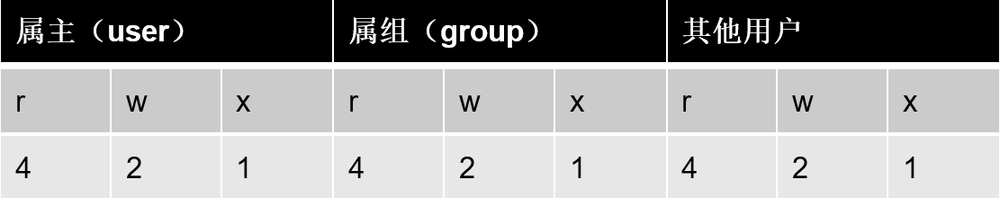
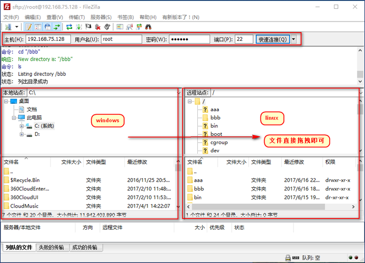
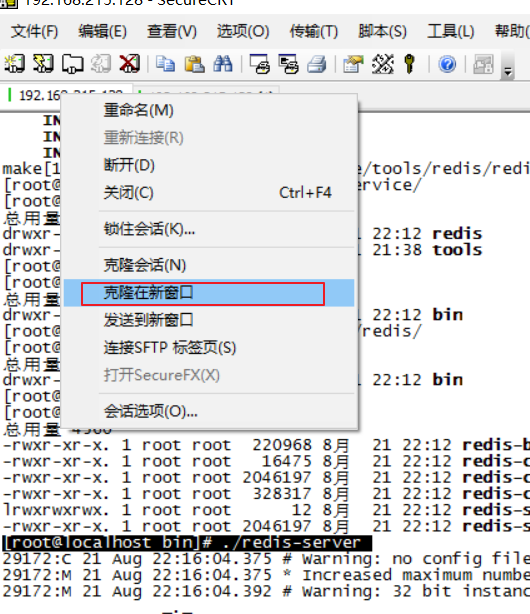
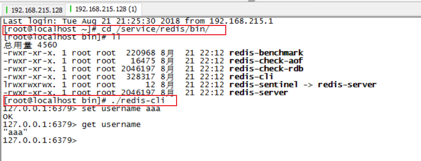
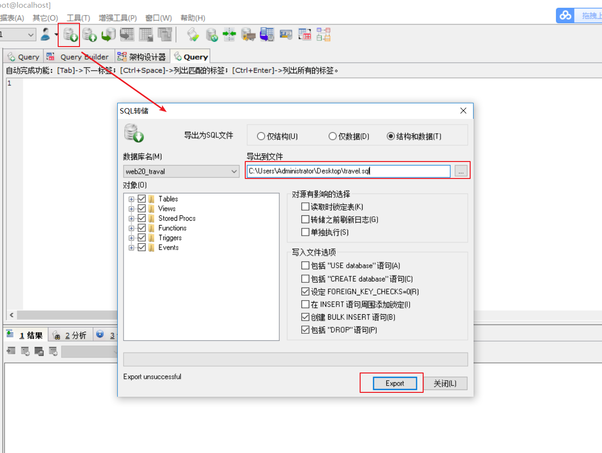
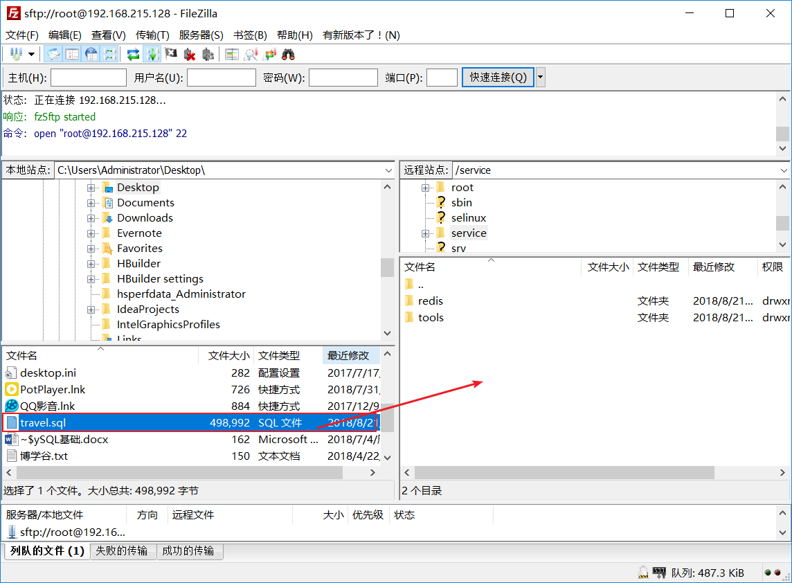
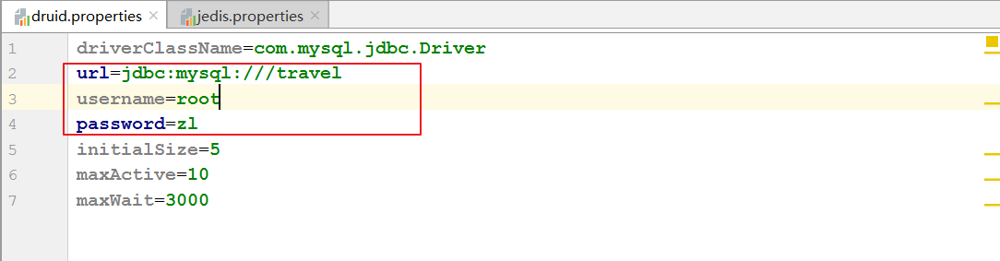
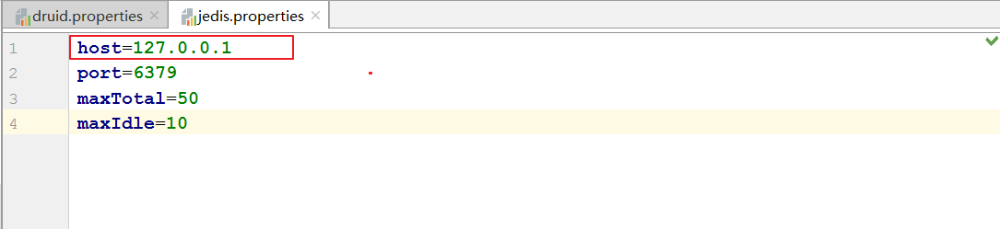
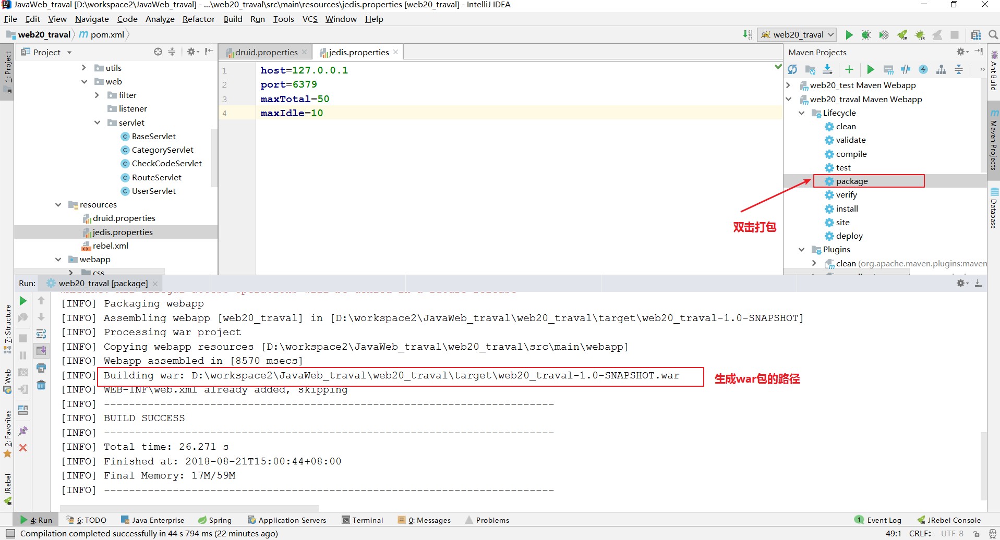
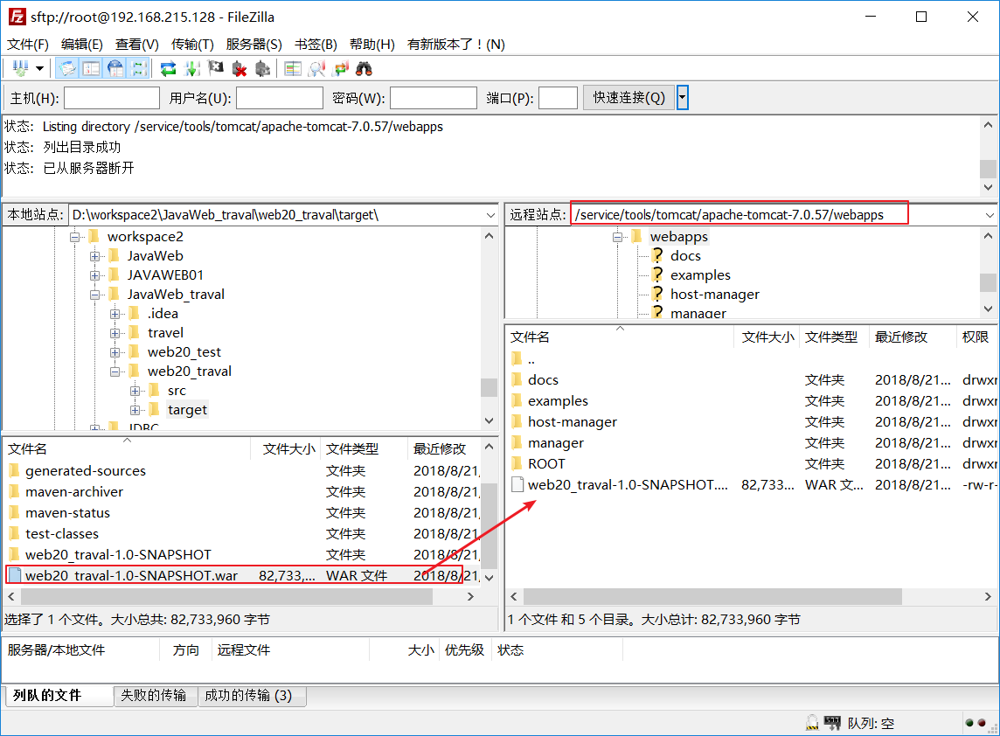

1. Linux基础二
2. Linux下权限控制(了解)
2.1. Linux的用户和组管理(了解)
2.1.1. 用户管理(了解)
useradd 添加一个用户
useradd test 添加test用户
useradd test -d /home/t1 指定用户home目录
passwd 设置、修改密码
passwd test 为test用户设置密码
切换登录：
ssh -l test -p 22 192.168.19.128
su – 用户名
userdel 删除一个用户
userdel test 删除test用户(不会删除home目录)
userdel –r test 删除用户以及home目录
2.1.2. 组管理(了解)
当在创建一个新用户user时，若没有指定他所属于的组，就建立一个和该用户同名的私有组
创建用户时也可以指定所在组
groupadd 创建组
groupadd public 创建一个名为public的组
useradd u1 –g public 创建用户指定组 groupdel 删除组，如果该组有用户成员，必须先删除用户才能删除组。
groupdel public
2.1.3. 用户切换和文件(了解)
su命令(掌握)
功能：切换用户。 用法：su [选项]... [-] [用户 [参数]... ] 示例：
su u1 切换到u1用户
su - u1 切换到u1用户，并且将环境也切换到u1用户的环境（推荐使用）
账户文件(了解)
/etc/passwd 用户文件 /etc/shadow 密码文件 /etc/group 组信息文件
用户文件(了解)
root:x:0:0:root:/root:/bin/bash
账号名称： 在系统中是唯一的
用户密码： 此字段存放加密口令
用户标识码(User ID)： 系统内部用它来标示用户
组标识码(Group ID)： 系统内部用它来标识用户属性
用户相关信息： 例如用户全名等
用户目录： 用户登录系统后所进入的目录
用户环境: 用户工作的环境
密码文件(了解)
shadow文件中每条记录用冒号间隔的9个字段组成.
用户名：用户登录到系统时使用的名字，而且是惟一的
口令： 存放加密的口令
最后一次修改时间: 标识从某一时刻起到用户最后一次修改时间
最大时间间隔: 口令保持有效的最大天数，即多少天后必须修改口令
最小时间间隔： 再次修改口令之间的最小天数
警告时间：从系统开始警告到口令正式失效的天数
不活动时间： 口令过期少天后，该账号被禁用
失效时间：指示口令失效的绝对天数(从1970年1月1日开始计算)
标志：未使用
组文件(了解)
root:x:0:
组名：用户所属组
组口令：一般不用
GID：组ID
用户列表：属于该组的所有用户
2.2. Linux的权限控制(熟悉)
2.2.1. Linux文件权限


2.2.2. Linux文件类型(了解)
普通文件： 包括文本文件、数据文件、可执行的二进制程序文件等。
目录文件： Linux系统把目录看成是一种特殊的文件，利用它构成文件系统的树型结构。
设备文件： Linux系统把每一个设备都看成是一个文件
2.2.3. Linux文件类型标识(了解)
普通文件（-）
目录（d）
符号链接（l）
- 进入etc可以查看，相当于快捷方式
字符设备文件（c）
块设备文件（s）
套接字（s）
命名管道（p）
2.2.4. 文件权限管理(熟悉)
chmod 变更文件或目录的权限。
chmod 755 a.txt
chmod u=rwx,g=rx,o=rx a.txt
chmod 000 a.txt / chmod 777 a.txt chown 变更文件或目录改文件所属用户和组
chown u1:public a.txt ：变更当前的目录或文件的所属用户和组
chown -R u1:public dir ：变更目录中的所有的子目录及文件的所属用户和组
3. Linux下软件安装(熟悉)
3.1. Linux下软件安装方式(熟悉)
Linux上的软件安装有以下几种常见方式
二进制发布包:软件已经针对具体平台编译打包发布，只要解压，修改配置即可
RPM包:软件已经按照redhat的包管理工具规范RPM进行打包发布，需要获取到相应的软件RPM发布包，然后用RPM命令进行安装
Yum在线安装:软件已经以RPM规范打包，但发布在了网络上的一些服务器上，可用yum在线安装服务器上的rpm软件，并且会自动解决软件安装过程中的库依赖问题
源码编译安装:软件以源码工程的形式发布，需要获取到源码工程后用相应开发工具进行编译打包部署。
3.2. 上传工具介绍(熟悉)
我们要在Linux系统桑安装软件,首选需要把软件的安装包上传到Linux机器上
FileZilla_3.7.3_win32.zip 在windows上直接解压就可以使用。

3.3. Linux下安装JDK(熟悉)
3.3.1. 卸载CentOS自带的jdk，上传我们自己的jdk(熟悉)
[root@localhost /]# java –version #查看当前系统jdk版本
[root@localhost /]# rpm -qa | grep java #查找jdk
java-1.6.0-openjdk-1.6.0.35-1.13.7.1.el6_6.i686
tzdata-java-2015e-1.el6.noarch
java-1.7.0-openjdk-1.7.0.79-2.5.5.4.el6.i686
卸载自带的jdk
[root@localhost jdk]# rpm -e --nodeps java-1.6.0-openjdk-1.6.0.35-1.13.7.1.el6_6.i686
[root@localhost jdk]# rpm -e --nodeps java-1.7.0-openjdk-1.7.0.79-2.5.5.4.el6.i686
3.3.2. 上传我们自己的安装包(熟悉)
在Linux上创建软件安装目录`/service/toos/`
[root@localhost /]# mkdir -p /service/tools #创建多级目录,以后软件九安装在这个目录下
3.3.3. 解压我们的jdk(熟悉)
[root@localhost /]# cd /service/tools/ #进入到安装文件目录下
[root@localhost tools]# cd jdk/ #进入到jdk目录下
[root@localhost jdk]# tar -xzvf jdk-7u71-linux-i586.tar.gz #解压jdk
[root@localhost jdk]# cd jdk1.7.0_71/ #进入到解压后的目录下
[root@localhost jdk1.7.0_71]# pwd #查询当前工作目录
/service/tools/jdk/jdk1.7.0_71
3.3.4. 配置环境变量(熟悉)
1. 编辑`/etc/profile` 文件
[root@localhost jdk]# vim /etc/profile
2. 在末尾行添加
#set java environment
JAVA_HOME=/service/tools/jdk/jdk1.7.0_71 #自己解压的jdk的路径
CLASSPATH=.:$JAVA_HOME/lib.tools.jar
PATH=$JAVA_HOME/bin:$PATH
export JAVA_HOME CLASSPATH PATH
3. 保存退出
[root@localhost jdk]# source /etc/profile 使更改的配置立即生效
3.3.5. 注意(熟悉)
1.jdk的版本一定要与系统版本一致(centos 32 jdk 32 )
2.配置环境变量时JAVA_HOME=/service/tools/jdk/jdk1.7.0_71 一定要是自己解压的jdk的路径
3.4. Linux下安装MYSQL(熟悉)
3.4.1. 卸载CentOS自带的mysql(熟悉)
[root@localhost jdk]# rpm -qa | grep mysql #查找CentOS 自带的mysql
mysql-libs-5.1.73-5.el6_6.i686
卸载CentOS自带的mysql
[root@localhost jdk]# rpm -e --nodeps mysql-libs-5.1.73-5.el6_6.i686
3.4.2. 解压我们自己上传的MYSQL(熟悉)
[root@localhost mysql]# cd /service/tools/mysql/ # 切换到MYSQL安装目录下
[root@localhost mysql]# tar -xvf MySQL-5.6.22-1.el6.i686.rpm-bundle.tar # 解压MYSQL安装包
MySQL-shared-compat-5.6.22-1.el6.i686.rpm
MySQL-server-5.6.22-1.el6.i686.rpm
MySQL-client-5.6.22-1.el6.i686.rpm
MySQL-devel-5.6.22-1.el6.i686.rpm
MySQL-test-5.6.22-1.el6.i686.rpm
MySQL-shared-5.6.22-1.el6.i686.rpm
MySQL-embedded-5.6.22-1.el6.i686.rpm
3.4.3. 安装MYSQL(熟悉)
安装MYSQL服务器
[root@localhost mysql]# rpm -ivh MySQL-server-5.6.22-1.el6.i686.rpm
安装MYSQL客户端
[root@localhost mysql]# rpm -ivh MySQL-client-5.6.22-1.el6.i686.rpm
开启MYSQL服务
[root@localhost mysql]# service mysql start
Starting MySQL.[确定]
查看MYSQL密码
[root@localhost mysql]# cat /root/.mysql_secret
# The random password set for the root user at Tue Aug 21 21:15:34 2018 (local time): S0ANhsOTE5wdFLKn
登录MYSQL
[root@localhost mysql]# mysql -uroot -pS0ANhsOTE5wdFLKn
修改MYSQL初始密码
mysql> set password = password('zl');
Query OK, 0 rows affected (0.12 sec)
3.5. Linux下安装Tomcat(熟悉)
3.5.1. 解压我们自己上传的Tomcat(熟悉)
[root@localhost mysql]# cd /service/tools/tomcat/
[root@localhost tomcat]# tar -xzvf apache-tomcat-7.0.57.tar.gz
3.5.2. 启动Tomcat(熟悉)
[root@localhost tomcat]# cd /service/tools/tomcat/apache-tomcat-7.0.57/bin/ # 切换到tomcat可执行文件目录下
[root@localhost bin]# ./startup.sh # 执行命令,开启tomcat
Using CATALINA_BASE: /service/tools/tomcat/apache-tomcat-7.0.57
Using CATALINA_HOME: /service/tools/tomcat/apache-tomcat-7.0.57
Using CATALINA_TMPDIR: /service/tools/tomcat/apache-tomcat-7.0.57/temp
Using JRE_HOME: /usr
Using CLASSPATH: /service/tools/tomcat/apache-tomcat-7.0.57/bin/bootstrap.jar:/service/tools/tomcat/apache-tomcat-7.0.57/bin/tomcat-juli.jar
Tomcat started.
3.5.3. 访问Tomcat(熟悉)
关闭Linux防火墙
[root@localhost ~]# service iptables stop
在本机浏览器输入,输入:http://192.168.215.128:8080/ 访问
3.6. Linux下安装Redis(熟悉)
3.6.1. 安装依赖(熟悉)
[root@localhost gcc安装依赖]# rpm -U libgcc-4.4.7-23.el6.i686.rpm
[root@localhost gcc安装依赖]# rpm -U libgomp-4.4.7-23.el6.i686.rpm
[root@localhost gcc安装依赖]# rpm -ivh mpfr-2.4.1-6.el6.i686.rpm
[root@localhost gcc安装依赖]# rpm -ivh cpp-4.4.7-23.el6.i686.rpm
[root@localhost gcc安装依赖]# rpm -ivh ppl-0.10.2-11.el6.i686.rpm
[root@localhost gcc安装依赖]# rpm -ivh cloog-ppl-0.15.7-1.2.el6.i686.rpm
[root@localhost gcc安装依赖]# rpm -ivh gcc-4.4.7-23.el6.i686.rpm
3.6.2. 上传Redis安装包(熟悉)

3.6.3. 解压redis安装文件(熟悉)
[root@localhost redis]# tar -xzvf redis-3.2.8.tar.gz
3.6.4. 编译与安装(熟悉)
[root@localhost redis-3.2.8]# cd /service/tools/redis/redis-3.2.8 # 切换到redis的解压目录
[root@localhost redis-3.2.8]# make MALLOC=libc # 编译redis
[root@localhost redis-3.2.8]# make PREFIX=/service/redis install # 安装redis到指定目录,prefix参数就是安装目录
切换到安装目录下,查看执行文件
[root@localhost redis]# cd /service/redis/bin/
[root@localhost bin]# ll
总用量 4560
-rwxr-xr-x. 1 root root 220968 8月 21 22:12 redis-benchmark
-rwxr-xr-x. 1 root root 16475 8月 21 22:12 redis-check-aof
-rwxr-xr-x. 1 root root 2046197 8月 21 22:12 redis-check-rdb
-rwxr-xr-x. 1 root root 328317 8月 21 22:12 redis-cli
lrwxrwxrwx. 1 root root 12 8月 21 22:12 redis-sentinel -> redis-server
-rwxr-xr-x. 1 root root 2046197 8月 21 22:12 redis-server
3.6.5. 开启Redis服务(熟悉)
[root@localhost bin]# ./redis-server
3.6.6. 使用redis客户端连接redis(熟悉)
克隆一个会话,打开客户端

执行客户端命令,操作redis

3.7. Linux下发布web项目(熟悉)
3.7.1. 同步本地数据到Linux服务器的数据库(熟悉)
导出本地数据库

将导出的sql脚本上传到Linux服务器上

在Linux服务器上完成数据导入
[root@localhost service]# mysql -uroot -pzl
mysql> create database travel character set = utf8 ;
Query OK, 1 row affected (0.07 sec)
mysql> use travel ;
mysql> source /service/travel.sql
mysql> show tables ;
3.7.2. 使用idea工具打包web项目(熟悉)
修改配置文件


打包

3.7.3. 上传war包到Linux服务器上的tomcat中(熟悉)

3.7.4. 修改war包名称(熟悉)
因为我在项目中写的项目的虚拟路径是`/web20`
而且我是把项目发布到`webapps`目录下`,webapps`目录下项目的虚拟目录就是项目的目录名称 ,所以需要修改war包名称
如果开发中项目的虚拟路径是`/`,那么可以删除掉`webapps`目录下的默认的`ROOT`,将我们war包名称改为`ROOT`
[root@localhost webapps]# mv web20_traval-1.0-SNAPSHOT.war web20.war
3.7.5. 启动tomcat(熟悉)
[root@localhost webapps]# cd ../bin/ # 切换到tomcat的可执行文件目录下
[root@localhost bin]# ./startup.sh # 启动tomcat
访问项目:http://192.168.215.128:8080/web20/index.html